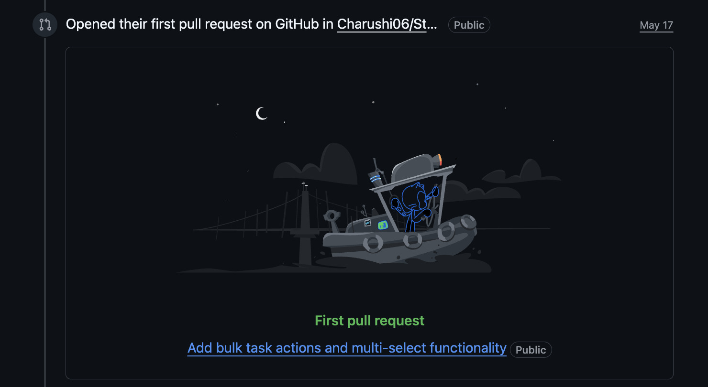

at one point, none of the buttons worked anymore on localhost. Then I found out I had accidentally broken store.js with a missing bracket and got hit with:
Uncaught SyntaxError: Unexpected end of input
I genuinely thought I had destroyed the entire project for a second.
But after fixing it and seeing everything work again, I had one of those moments where coding suddenly feels rewarding in a very specific way. Not because the feature was huge, but because I finally understood the workflow from start to finish.
I learned how to work on feature branches, how to commit changes properly, how PRs are created, how local development actually works, how frontend state management connects with UI interactions, and most importantly, how normal it is to break things while learning.
The most surprising thing was realizing that open source isn’t some unreachable thing only experienced developers do. Most of it is simply:
* reading code patiently
* experimenting
* debugging
* asking questions
* and continuing even after confusion
This wasn’t just “my first PR.”
It was the first time I truly felt like I contributed something real to software that other people can use.
And I think that feeling is going to stay with me for a long time.